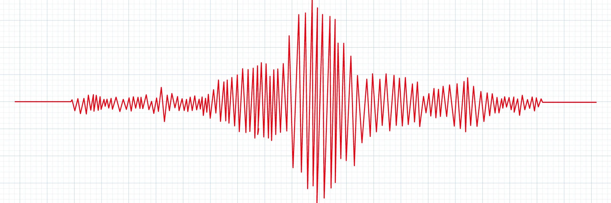

Deprem Dalgaları Nedir?
Deprem dalgaları, yer kabuğunda meydana gelen bir deprem sırasında yayılan enerjinin bir sonucudur. Deprem dalgaları genellikle sismik dalgalar olarak da adlandırılır.

Dünyada ve Ülkemizde Görülen Deprem Türleri
Dünyada ve Türkiye'de çeşitli deprem türleri görülmektedir:
- Tektonik Depremler: Yer kabuğundaki levhaların hareketi sonucu oluşan depremler.
- Sığ Depremler: Genellikle 0-70 km derinlikte meydana gelen depremler.
- Derin Depremler: Yaklaşık 70-700 km derinlikte meydana gelen depremler.
- Okyanus Depremleri: Deniz tabanında oluşan depremler.
- Açıklık Depremleri: Kıyı bölgelerindeki deniz tabanında oluşan depremler.
- Fay Depremleri: Fay hatlarında meydana gelen depremler.
- Volkanik Depremler: Yanardağ patlamaları veya magmanın hareketi sonucu oluşan depremler.
Üçüncü Bölüm
Bu bölüm test amacıyla eklenmiştir.